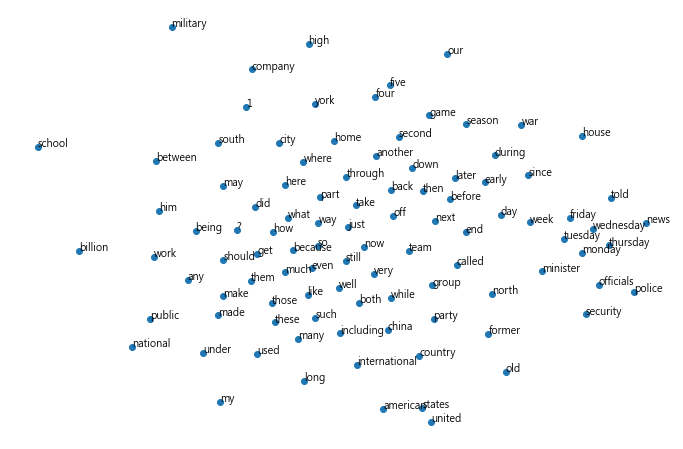

GloVe 測試
Contents
9. GloVe 測試¶
# 載入相關套件
import numpy as np
# 載入GloVe詞向量檔 glove.6B.300d.txt
embeddings_dict = {}
with open("./glove/glove.6B.300d.txt", 'r', encoding="utf-8") as f:
for line in f:
values = line.split()
word = values[0]
vector = np.asarray(values[1:], "float32")
embeddings_dict[word] = vector
# 隨意測試一個單字(love)，取得 GloVe 的詞向量
embeddings_dict['love']
array([-4.5205e-01, -3.3122e-01, -6.3607e-02, 2.8325e-02, -2.1372e-01,
1.6839e-01, -1.7186e-02, 4.7309e-02, -5.2355e-02, -9.8706e-01,
5.3762e-01, -2.6893e-01, -5.4294e-01, 7.2487e-02, 6.6193e-02,
-2.1814e-01, -1.2113e-01, -2.8832e-01, 4.8161e-01, 6.9185e-01,
-2.0022e-01, 1.0082e+00, -1.1865e-01, 5.8710e-01, 1.8482e-01,
4.5799e-02, -1.7836e-02, -3.3952e-01, 2.9314e-01, -1.9951e-01,
-1.8930e-01, 4.3267e-01, -6.3181e-01, -2.9510e-01, -1.0547e+00,
1.8231e-01, -4.5040e-01, -2.7800e-01, -1.4021e-01, 3.6785e-02,
2.6487e-01, -6.6712e-01, -1.5204e-01, -3.5001e-01, 4.0864e-01,
-7.3615e-02, 6.7630e-01, 1.8274e-01, -4.1660e-02, 1.5014e-02,
2.5216e-01, -1.0109e-01, 3.1915e-02, -1.1298e-01, -4.0147e-01,
1.7274e-01, 1.8497e-03, 2.4456e-01, 6.8777e-01, -2.7019e-01,
8.0728e-01, -5.8296e-02, 4.0550e-01, 3.9893e-01, -9.1688e-02,
-5.2080e-01, 2.4570e-01, 6.3001e-02, 2.1421e-01, 3.3197e-01,
-3.4299e-01, -4.8735e-01, 2.2264e-02, 2.7862e-01, 2.3881e-01,
9.7794e-02, 3.8023e-01, -3.7744e-02, -4.1966e-01, -1.9145e-01,
-9.5830e-02, 2.6871e-01, 5.2876e-01, -2.6870e-01, -3.4450e-01,
2.5413e-01, 1.3606e-01, 3.6528e-01, 8.1960e-02, -5.2224e-01,
3.4159e-02, 1.7019e-01, -1.0520e-01, -8.0873e-01, -1.8095e-01,
-6.0823e-02, 2.6014e-01, -7.8717e-02, -1.5161e-01, -6.8438e-01,
2.1809e-01, 4.7330e-02, -1.2147e-01, -3.3892e-01, -1.8629e-02,
2.4546e-01, 2.7374e-01, -2.7045e-01, -8.7233e-02, -4.7871e-01,
1.9630e-01, 2.3124e-02, 1.9453e-01, -4.6860e-01, 4.4499e-01,
1.8360e-01, -1.6480e-01, 3.8598e-01, 3.6070e-01, -3.1108e-01,
-3.4627e-01, 1.9004e-01, -9.8683e-02, 3.3821e-01, -1.3978e-01,
-7.2723e-01, -1.0660e-01, 1.9208e-03, -3.3093e-01, 3.5117e-01,
1.5491e-01, 1.7150e-01, 2.8933e-01, -4.9213e-02, -5.0567e-01,
-2.3513e-01, -2.8005e-01, -2.8487e-01, -2.4393e-01, -4.0838e-02,
-2.7223e-01, 9.4564e-02, 1.7332e-01, 1.8691e-01, -1.3585e-01,
-4.6439e-01, -4.5677e-01, 9.7890e-02, 3.9113e-02, 1.7901e-01,
-4.5629e-01, 4.7520e-01, -2.0388e-01, 2.4123e-01, 6.7551e-01,
6.2105e-02, -1.8940e-01, 1.5054e-01, 1.5875e-01, -2.3365e-01,
3.7429e-01, -2.3463e-01, 4.0692e-01, 1.4035e-01, -4.2971e-01,
5.6713e-01, -2.6706e-01, -6.8028e-02, -5.1264e-01, -3.0945e-01,
-3.9065e-01, -2.7004e-01, -1.1802e+00, 6.6480e-01, -2.4366e-01,
3.9183e-01, -2.8970e-01, -1.8839e-01, -4.9282e-01, 1.4538e-01,
2.4467e-01, -4.4340e-03, 2.3265e-01, 7.4544e-02, -3.0006e-01,
-3.0272e-01, -1.2394e-01, 3.3473e-01, 3.3880e-01, 9.7445e-02,
-3.3773e-01, -5.4316e-01, -4.7514e-01, -1.5696e-01, -9.3516e-01,
-8.7034e-02, -2.6743e-01, 6.4641e-04, 3.1940e-01, -6.2562e-03,
1.5854e+00, 1.2484e-01, 4.8481e-01, 7.5394e-02, 1.8963e-01,
-1.0226e-01, 4.7413e-01, 7.0402e-01, -6.4418e-02, -1.0181e-02,
-6.8619e-01, 1.5335e-02, 4.7851e-02, 3.7650e-01, 1.0487e-01,
2.2974e-01, 4.5352e-01, 3.1482e-01, 5.8880e-02, 6.7096e-02,
1.5679e-01, 1.3099e-01, 3.4581e-02, -7.3896e-02, -3.6433e-01,
-1.8847e-01, 4.1556e-02, -2.0124e-01, -7.3918e-02, 3.8752e-01,
1.6759e-01, -4.0627e-01, -1.3220e-02, -7.1793e-01, -2.2904e-01,
2.0474e-01, -1.3648e-01, 3.7779e-01, -4.0003e-01, -5.0106e-02,
-3.7799e-01, 7.2109e-02, 2.3057e-02, 2.3879e-01, -2.2423e-01,
-8.4834e-02, -7.0726e-01, -1.6182e-01, 2.6373e-01, 1.2226e-01,
8.0282e-02, 7.5963e-02, -3.4695e-01, 3.7703e-01, 3.6612e-01,
-9.8416e-02, 4.7400e-01, -2.5085e-01, 1.8641e-01, -2.5993e-01,
3.9035e-02, -6.1394e-01, 1.4721e-01, -6.7619e-01, -1.2489e-01,
3.8031e-01, -2.8061e-01, -3.9680e-01, 2.4165e-02, 9.8706e-02,
2.4838e-01, -4.5881e-01, 2.0310e-01, -4.3515e-01, -7.7804e-03,
-2.4642e-02, -1.3204e+00, -4.1078e-01, 2.8145e-01, 2.8188e-02,
-2.0470e-01, 1.6037e-01, -1.6696e-01, 1.3761e-01, -3.6714e-01,
1.3801e-01, -2.0688e-01, 3.8274e-01, 2.1289e-01, -7.5001e-02,
-5.0367e-01, -2.9295e-02, -2.1254e-02, -2.4253e-01, 3.3530e-01,
-3.5534e-01, 2.5358e-01, 3.8906e-02, 2.4314e-01, -2.8696e-02],
dtype=float32)
# 字數
len(embeddings_dict.keys())
400000
9.1. 尋找相似詞¶
# 以歐基里德(euclidean)距離計算相似性
from scipy.spatial.distance import euclidean
def find_closest_embeddings(embedding):
return sorted(embeddings_dict.keys(),
key=lambda word: euclidean(embeddings_dict[word], embedding))
print(find_closest_embeddings(embeddings_dict["king"])[1:10])
['queen', 'monarch', 'prince', 'kingdom', 'reign', 'ii', 'iii', 'brother', 'crown']
9.2. 以散佈圖觀察單字相似度¶
# 任意選 100 個單字
words = list(embeddings_dict.keys())[100:200]
# print(words)
from sklearn.manifold import TSNE
import matplotlib.pyplot as plt
# 以 T-SNE 降維至二個特徵
tsne = TSNE(n_components=2)
vectors = [embeddings_dict[word] for word in words]
Y = tsne.fit_transform(vectors)
# 繪製散佈圖，觀察單字相似度
plt.figure(figsize=(12, 8))
plt.axis('off')
plt.scatter(Y[:, 0], Y[:, 1])
for label, x, y in zip(words, Y[:, 0], Y[:, 1]):
plt.annotate(label, xy=(x, y), xytext=(0, 0), textcoords="offset points")

9.3. 文件相似度比較¶
# 測試語料：最後一句為問題，其他為回答
corpus = [
'This is the first document.',
'This is the second second document.',
'And the third one.',
'Is this the first document?',
]
9.4. 語料分詞¶
import nltk
# 參數設定
MAX_WORDS_A_LINE = 7 # 每行最多字數
# 分詞
document_tokens=[] # 整理後的字詞
token_count_per_line = [] # 每行字數
tokenizer = nltk.tokenize.RegexpTokenizer(r'\w+') # 篩選文數字(Alphanumeric)
for line in corpus:
tokens = tokenizer.tokenize(line.lower())
token_count_per_line.append(len(tokens))
tokens += [''] * (MAX_WORDS_A_LINE - len(tokens))
document_tokens.append(tokens)
document_tokens = np.array(document_tokens, dtype=object).reshape(len(corpus), -1)
document_tokens.shape
(4, 7)
# 轉換詞向量
document_word_embeddings=np.zeros((len(corpus),MAX_WORDS_A_LINE,300))
for i in range(document_tokens.shape[0]):
for j in range(document_tokens.shape[1]):
if document_tokens[i, j] == '':
continue
document_word_embeddings[i, j] = embeddings_dict[document_tokens[i, j]]
document_word_embeddings.shape
(4, 7, 300)
token_count_per_line
[5, 6, 4, 5]
document_word_embeddings.shape[1]
7
9.5. 使用 PV-DBOW (Paragraph Vector - Distributed Bag-of-words) 比較相似度¶
# 將同一句的每個單字詞向量平均
# 將補0的向量移除：先將之變為 nan，再使用 nanmean
for i in range(document_word_embeddings.shape[0]):
document_word_embeddings[:, token_count_per_line[i]:, :] = np.nan
sum__word_embeddings = np.nanmean(document_word_embeddings, axis=1)
sum__word_embeddings.shape
(4, 300)
# 字句的相似度比較
from sklearn.metrics.pairwise import cosine_similarity
print (cosine_similarity(sum__word_embeddings[-1:], sum__word_embeddings[:-1], dense_output=False))
[[1. 0.98607379 0.88322124]]